RAD-Seq Reference-based data analysis
Overview
QuestionsObjectives
- How to analyze RAD sequencing data using a reference genome for a population genomics study?
Requirements
- Analysis of RAD sequencing data using a reference genome
- SNP calling from RAD sequencing data
- Calculate population genomics statistics from RAD sequencing data
Time estimation: 1/2d
Introduction
In the study of Hohenlohe et al. 2010, a genome scan of nucleotide diversity and differentiation in natural populations of threespine stickleback Gasterosteus aculeatus was conducted. Authors used Illumina-sequenced RAD tags to identify and type over 45,000 single nucleotide polymorphisms (SNPs) in each of 100 individuals from two oceanic and three freshwater populations.

We here proposed to re-analyze these data at least until the population genomics statistics calculation step using STACKS pipeline. Gasterosteus aculeatus draft genome will be used here as reference genome. In a reference-based RAD-seq data analysis, the reads are aligned (or mapped) against a reference genome to constrain our analysis to focus on already discovered loci. A de-novo approach can also be conducted (see de_novo tutorial, enhancing discoverability of new loci of interest but also of false positive one).
Agenda
In this tutorial, we will deal with:
Pretreatments
Data upload
The original data is available at NCBI SRA ENA under accession number SRR034310 as part of the NCBI SRA ENA study accession number SRP001747.
We will look at the first run SRR034316 out of 7:
- Here are 16 samples from 2 populations, 8 from Bear Paw (freshwater) and 8 from Rabbit Slough (oceanic)
You can directly used archive from the Sequence Read Archive (SRA) for raw reads.
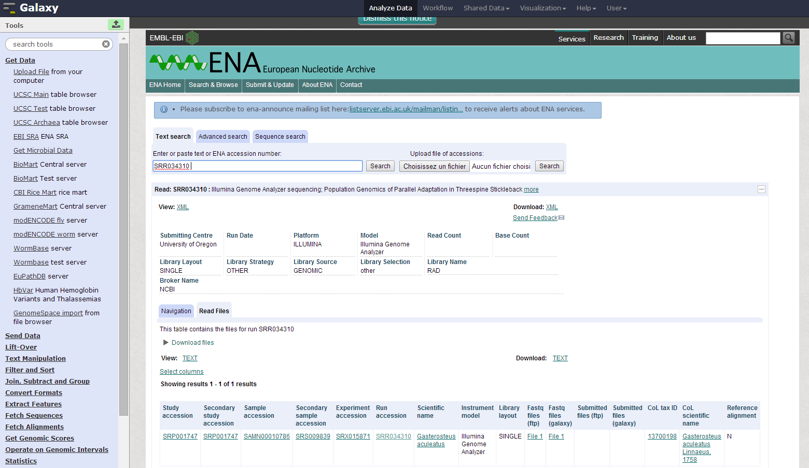
To download all training datasets (i.e reads, reference genome, population map file and barcodes file), you need to use the corresponding CeSGO hub repository.
Hands-on: Data upload
- Create a new history for this RAD-seq exercise. If you are not inspired, you can name it “STACKS 1.42 RAD: population genomics with reference genome” for example…
- Import FASTQ files (e.g.
SRR034310and corresponding reference genome FASTA filechromFaas population map information filePopulation_map.txtand barcodes fileBarcodes_SRR034310) from SRA and CeSGO
Comments
If you are using the GenOuest Galaxy instance, you can load the dataset using ‘Shared Data’ ‘Data Libraries’ ‘1 Galaxy teaching folder’ ‘EnginesOn’ ‘RADseq’ ‘Stickelback population genomics’ ‘SRR034310’
Tip: Importing data via links
- Open the Galaxy Upload Manager
- Select Paste/Fetch Data
- Paste the following links into the text field
- ftp://ftp.sra.ebi.ac.uk/vol1/fastq/SRR034/SRR034310/SRR034310.fastq.gz
- ftp://hgdownload.cse.ucsc.edu/goldenPath/gasAcu1/bigZips/chromFa.tar.gz
- https://cesgo.genouest.org/resources/373/download/Population_map.txt
- https://cesgo.genouest.org/resources/374/download/Barcodes_SRR034310.tabular
- Press Start
Tip: Changing the file type
fastqtofastqsangeronce the data file is in your history.As we know here that the datatype is fastqsanger, we can directly change it through the upcoming method. Normally, you need to execute FastQGroomer to be sure to have a correct fastqsanger file format. And if you don’t know how your quality score is encoded on raw fastQ files, please, use the FastQC tool to determine it!
- Click on the pencil button displayed in your dataset in the history
- Choose Datatype on the top
- Select
fastqsanger- Press Save
As default, Galaxy takes the link as name. It also do not link the dataset to a database or a reference genome.
Comments
- Add the “stickleback” custom build from the Fasta reference genome file
- Edit the “Database/Build” to select “stickleback”
- Rename the datasets according to the samples
The sequences are raw sequences from the sequencing machine, without any pretreatments. They need to be demultiplexed. To do so, we can use the Process Radtags tool from STACKS.
Demultiplexing reads
For demultiplexing, we use the Process Radtags tool from STACKS .
Hands-on: Demultiplexing reads
- Process Radtags : Run
Stacks: process radtagson FastQ file to demultiplex the reads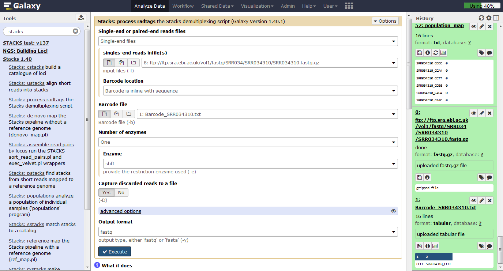
Questions
- How many reads were on the original dataset?
- How many are kept?
- Can you try to explain the reason why we loose a lot of reads here?
What kind of infiormation this result gives concerning the upcoming data analysis and the barcodes design in general ?
Click to view answers
- 8895289 total reads
- 8139531 retained reads
- Exploring the `results.log` file allows to see that there is no sequences filtered for low quality statement. As we don't specify the corresponding advanced option, Process radtags didn't apply quality related filtering. So here, all not retained sequences are not recorded because of an ambiguous barcode or an ambiguous RAD-Tag. This means that some barcodes are not exactly what was specified on the barcode file and that sometimes, no SbfI restriction enzyme site was found. This can be due to some sequencing problems but here, this is also due to the addition, in the original sequencing library, of RAD-seq samples from another study. This is something often used to avoid having too much sequences beginning with the exact same nucleotides sequences and thus Illumina related issues during sequencing and clusters analysis
- Sequencing quality is essential! Each time your sequencing quality decreases, you loose data and thus essential biological information!
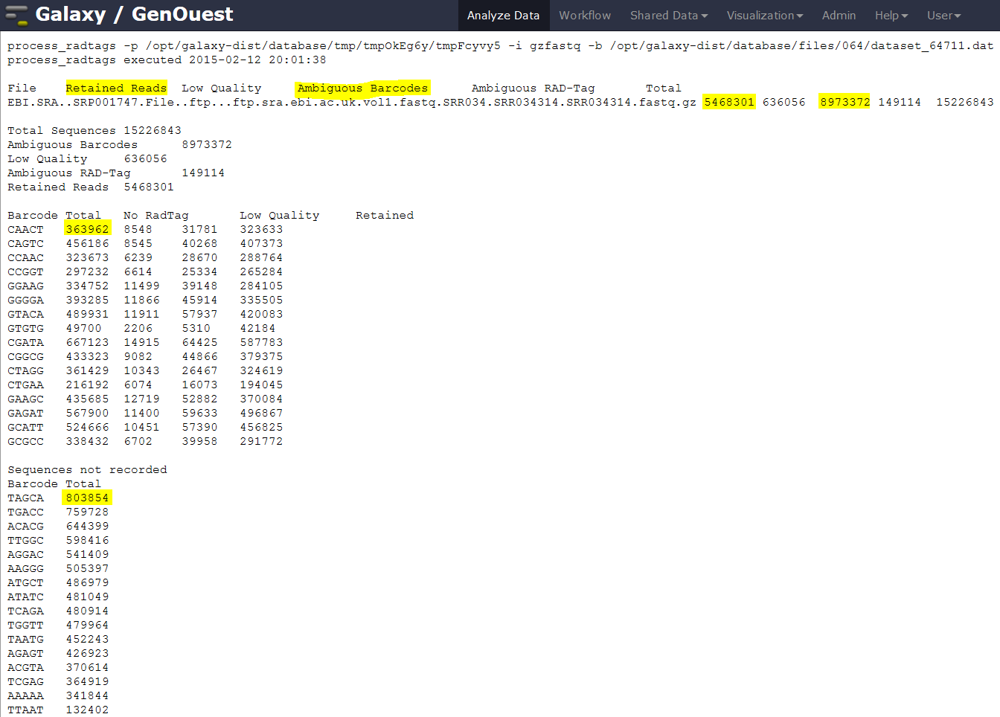
- Process Radtags : Re-Run
Stacks: process radtagson FastQ file playing with parametersIn
advanced options, activate theDiscard reads with low quality scoresoption and play with the score limit (default vs 20 for example) and examine the change in reads retained. Note that you can play also with the sliding window score threshold, by default 15% of the length of the read. This sliding window parameter allows notably the user to deal with the declining quality at the 3’ end of reads.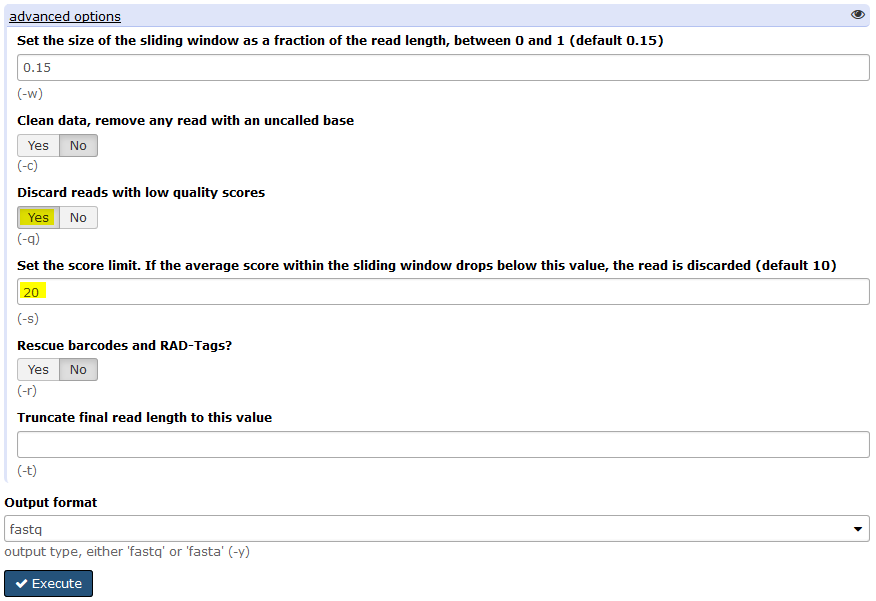
To do that, you can use data handling Galaxy tools to cut the interesting lines of each
result.log with Stacks: process radtagsfiles OR, as I made, just copy/paste these lines on the Galaxy upload tool using Paste/fetch data section and modifying the File header by sample and filename by Score 10 / Score 20 and noscorelimit for example… Before Starting the upload, you can select theConvert spaces to tabsoption through theUpload configurationwheel.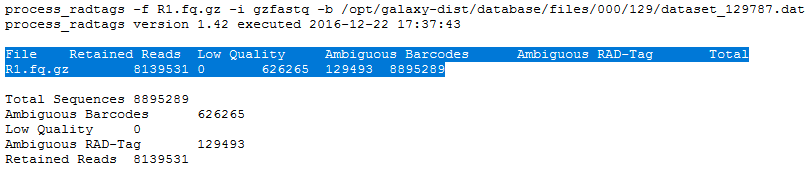
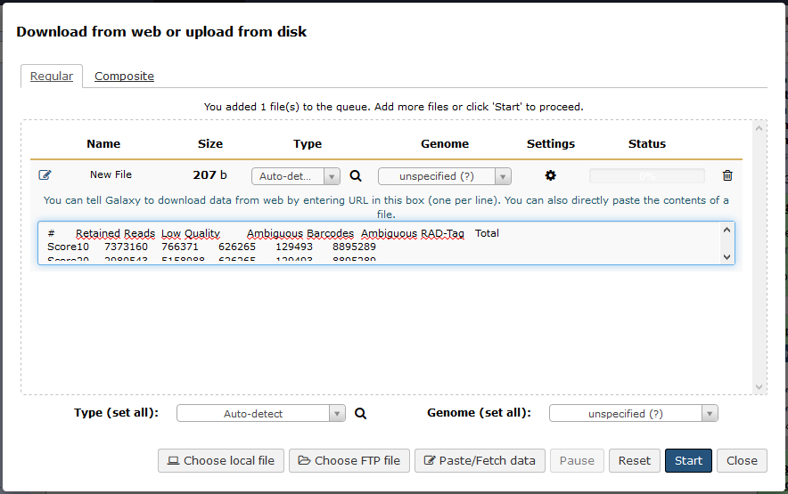
You can use the
Chartsfunctionality through the Visualize button reachable on theRadtags logsfile you just generated.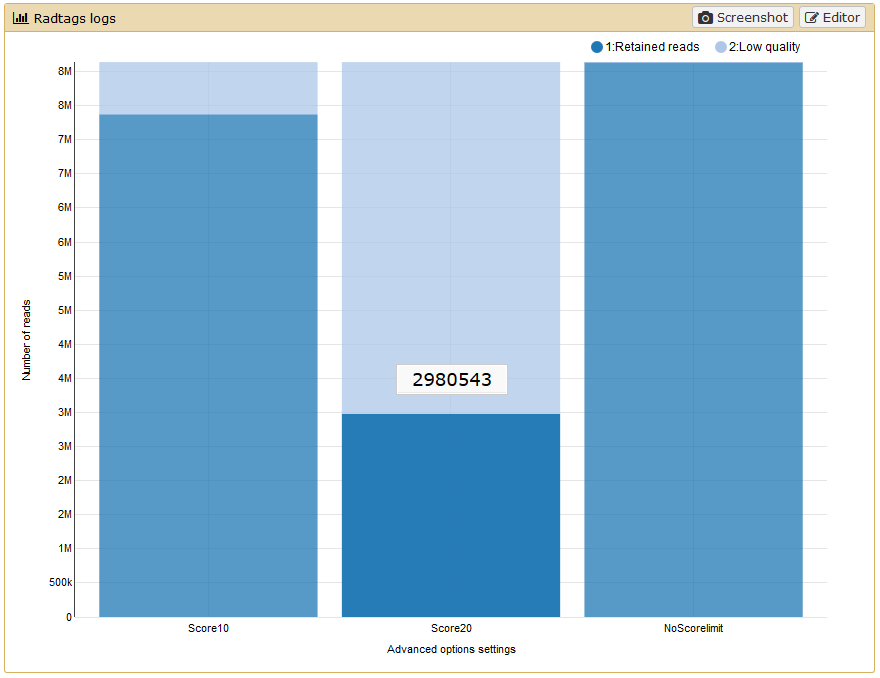
If like me you don’t have payed attention to the organization of you file for the graphical representation you obtain a non optimal bars diagram with a not intelligent X-axis ordering. There is a lot of diffferent manner to fix this. You can use the copy/paste “bidouille” like seen previously, or you can use Galaxy tools to manipulate the
radtags logs(did you change the filename frompasted entryto another label ?) file to generate a better graph. For example, you can useSelect lines that match an expressiontool to select rows then use theConcatenate datasets tail-to-headtool to reorganize these lines in a new file… OR, as I made, you can just sort the file using the first column.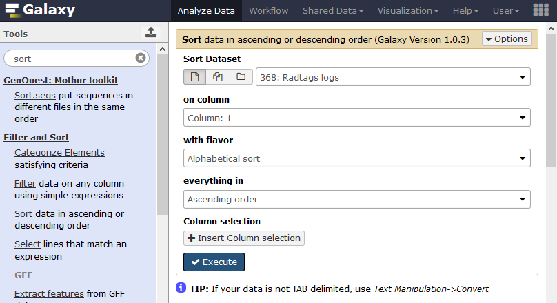
And you obtain a file like this one, ready to generate a beautiful and smart bar diagram!
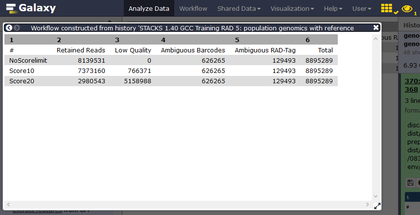
Using filter like
clean data, remove any read with an uncalled basehas here few impact:


The demultiplexed sequences are raw sequences from the sequencing machine, without any pretreatments. They need to be controlled for their quality.
Quality control
For quality control, we use similar tools as described in NGS-QC tutorial: FastQC.
Hands-on: Quality control
FastQC : Run FastQC on FastQ files to control the quality of the reads
Questions
What is the read length?
Click to view answers
- The read length is 32 bp
As it exists a draft genome for Gasterosteus aculeatus, we can use this information and map the sequences on this genome to identify polymorphism.
Mapping
To make sense of the reads, their positions within Gasterosteus aculeatus genome must be determined. This process is known as aligning or ‘mapping’ the reads to the reference genome.
Comment
Do you want to learn more about the principles behind mapping? Follow our training
Here we will use BWA. BWA is a fast light-weighted tool that aligns relatively short sequences (queries) to a sequence database (large), such as the human reference genome. It is developed by Heng Li at the Sanger Insitute.
Li et Durbin, Bioinformatics, 2009
BWA : Run BWA with the Commonly Used settings after specifying the fasta reference genome file from history, the fact that you are working with single-end libraries and finally the collection of demultiplexed FastQ files.
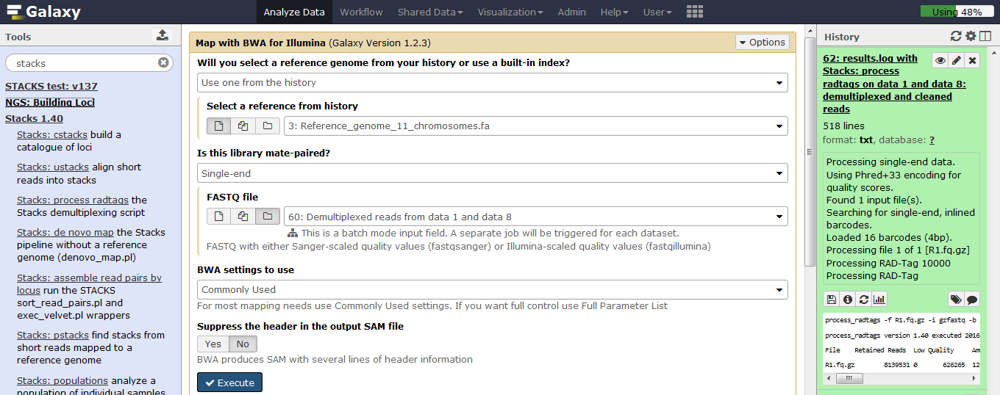
BWA generates BAM files with the mapped reads.
We next want to run Stacks on the freshwater and oceanic populations.
SNP calling from radtags
Run Stacks: Reference map Galaxy tool. This program will run pstacks, cstacks, and sstacks on the members of the population, accounting for the alignments of each read.
Comment
Information on ref_map.pl and its parameters can be found online: https://creskolab.uoregon.edu/stacks/comp/ref_map.php.
Stacks: Reference map : Run Stacks selecting the population usage. Specify each BWA-aligned individual as a sample, a population map and a minimum depth of coverage of 3.
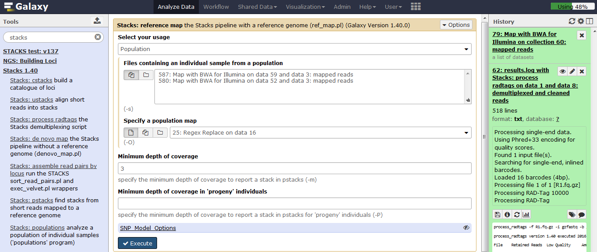
Comment
If you are using a file presenting population information and individual name in a different manner than expected by STACKS, you can use Galaxy tools like
Regex ReplaceorCut columns from a tableto generate it.
Once Stacks has completed running, investigate the output files:
result.logandcatalog.*(snps, alleles and tags). Notice that each locus now has a chromosome/base pair specified in each of the *tags.tsv files and in the catalog files.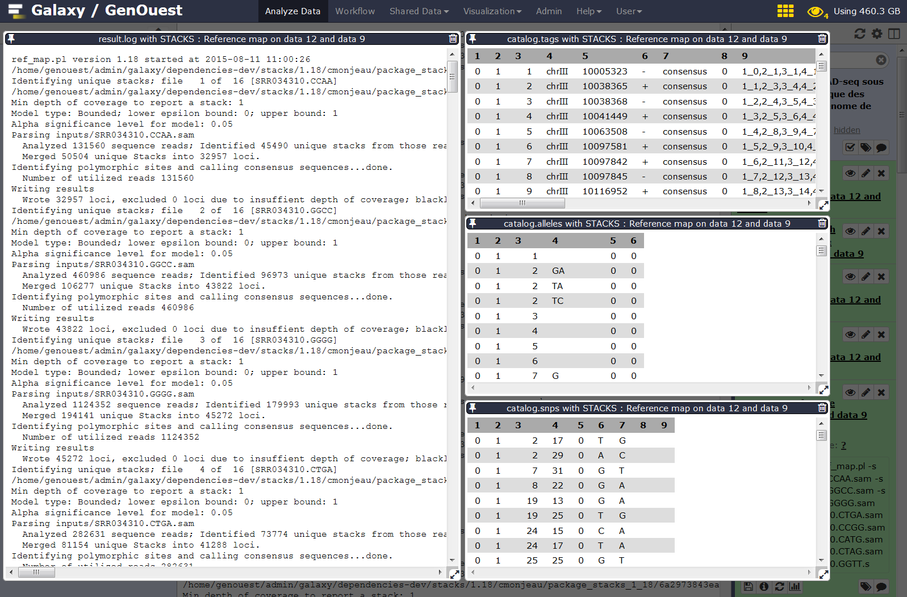
Calculate population genomics statistics
Stacks: populations : Run the last step of Stacks: Reference map pipeline specifying data filtering options (minimum percentage of individuals in a population required to process a locus for that population: 0.75 , output options (VCF and Structure) and enabling SNP and haplotype-based F statistics calculation.
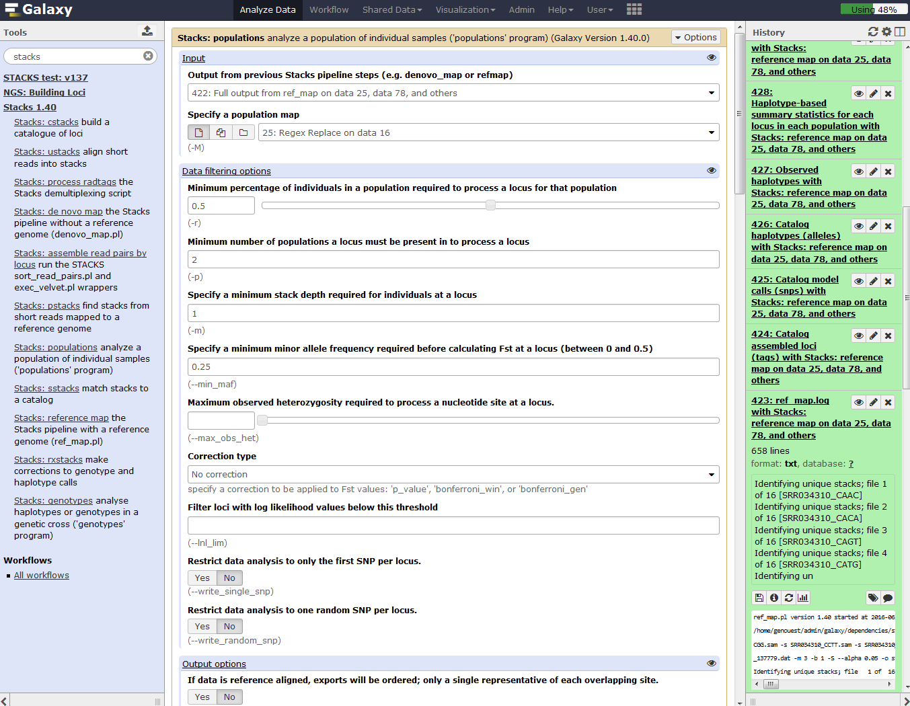
Now look at the output in the file `batch_1.sumstats` nammed `SNP and Haplotype-based F statistics with Stacks: populations ...` on your history. This file is also reachable on the data collection nammed `Full output from ref_map .....` with his original name `batch_1.sumstats`. There are a large number of statistics calculated at each SNP, so use Galaxy tools like filter, cut, and sort to focus on some.
Question
- What is the maximum value of FST at any SNP?
How many SNPs reach this FST value?
Click to view answers
- 0.75
- 3500
Conclusion
In this tutorial, we have analyzed real RAD sequencing data to extract useful information, such as which loci are candidate regarding the genetic differentiation between freshwater and oceanic Stickelback populations. To answer these questions, we analyzed RAD sequence datasets using a reference-based RAD-seq data analysis approach. This approach can be sum up with the following scheme:

Key points
Useful literature
Useful information regarding this type of analysis with descriptions and paper references for the tools used in this tutorial, and literature for this analysis techniques and interpretations can be found here.
Congratulations on successfully completing this tutorial!
Feedback
Please take a moment and provide your feedback on this tutorial. Your feedback will help guide and improve future revisions to this tutorial. Feedback Form